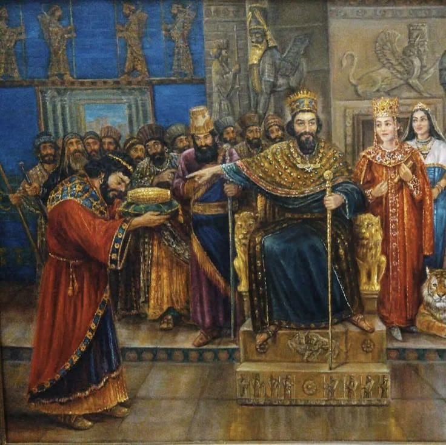

Monarcas
1. Ciro II el Grande (c. 600–530 a.C.) Fundador del Imperio aqueménida, Ciro II unificó a los medos y persas, estableciendo un vasto imperio que abarcaba desde Asia Menor hasta Asia Central. Conocido por su política de tolerancia, permitió a los pueblos conquistados mantener sus costumbres y religiones. Su conquista de Babilonia en 539 a.C. fue notable por la liberación de los judíos exiliados. Murió en batalla contra los masagetas en Asia Central.
2. Cambises II (530–522 a.C.)
Hijo de Ciro II, Cambises II continuó la expansión del imperio conquistando Egipto tras la batalla de Pelusio en 525 a.C. Se proclamó faraón y adoptó costumbres egipcias. Su reinado terminó abruptamente en 522 a.C. debido a su muerte en circunstancias misteriosas mientras regresaba a Persia para sofocar una rebelión.3. Gaumata (522 a.C.)
Usurpador que se hizo pasar por Esmerdis, hermano de Cambises II. Tomó el poder durante unos meses hasta que fue derrocado por una conspiración liderada por Darío I.4. Darío I el Grande (522–486 a.C.)
Ascendió al trono tras derrocar a Gaumata. Reorganizó el imperio en satrapías y estableció un sistema administrativo eficiente. Inició la construcción de Persépolis y promovió el uso del arameo como lengua administrativa. Intentó conquistar Grecia, pero fue derrotado en la batalla de Maratón en 490 a.C.5. Jerjes I (486–465 a.C.)
Hijo de Darío I, Jerjes I es conocido por su invasión a Grecia en 480 a.C., logrando victorias en las Termópilas y Artemisio, pero siendo derrotado en Salamina. Posteriormente, enfrentó revueltas internas y fue asesinado en una conspiración palaciega.6. Artajerjes I (465–424 a.C.)
Tercer hijo de Jerjes I, ascendió al trono tras una serie de intrigas palaciegas. Durante su reinado, enfrentó rebeliones en Egipto y conflictos con Grecia. Es mencionado en textos bíblicos por permitir el regreso de los judíos a Jerusalén.7. Jerjes II (424 a.C.)
Hijo de Artajerjes I, su reinado duró solo unos 45 días antes de ser asesinado por su hermanastro Sogdiano.Jerjes I Hijo de Artajerjes I, su reinado duró solo unos 45 días antes de ser asesinado por su hermanastro Sogdiano. .

8. Sogdiano (424 a.C.)
Usurpó el trono tras asesinar a Jerjes II, pero fue derrocado y ejecutado por su medio hermano Ochus, quien se convirtió en Darío II.
9. Darío II (423–404 a.C.)
Conocido como Darío Noto, su reinado estuvo marcado por corrupción y luchas internas. Apoyó a Esparta en la guerra del Peloponeso contra Atenas. Su esposa, Parysatis, tuvo una influencia significativa en la corte.10. Artajerjes II (404–358 a.C.)
Hijo de Darío II, enfrentó la rebelión de su hermano Ciro el Joven, quien fue derrotado en la batalla de Cunaxa. Su reinado estuvo plagado de revueltas y conflictos con Grecia.11. Artajerjes III (358–338 a.C.)
Antes conocido como Ochus, ascendió al trono tras eliminar a posibles rivales. Reconquistó Egipto y reprimió revueltas internas. Fue envenenado por su visir Bagoas, quien luego colocó a Arses en el trono.12. Arses (338–336 a.C.)
Hijo de Artajerjes III, fue un monarca títere bajo el control de Bagoas. Intentó liberarse de su influencia, pero fue asesinado junto con sus hijos.13. Darío III (336–330 a.C.)
Último rey aqueménida, ascendió al trono tras la muerte de Arses. Enfrentó la invasión de Alejandro Magno, siendo derrotado en las batallas de Issos y Gaugamela. Fue asesinado por sus propios sátrapas mientras huía.| 1 | 2 | 3 | 4 | 5 | Darío II | Artajerjes II | Artajerjes III | Arses | Dario III |
|---|